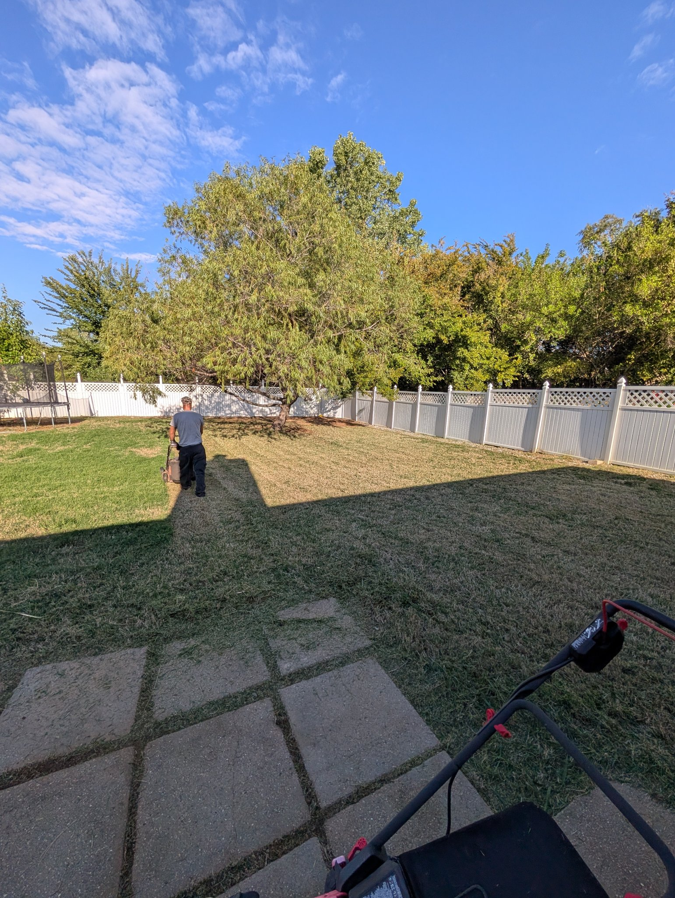
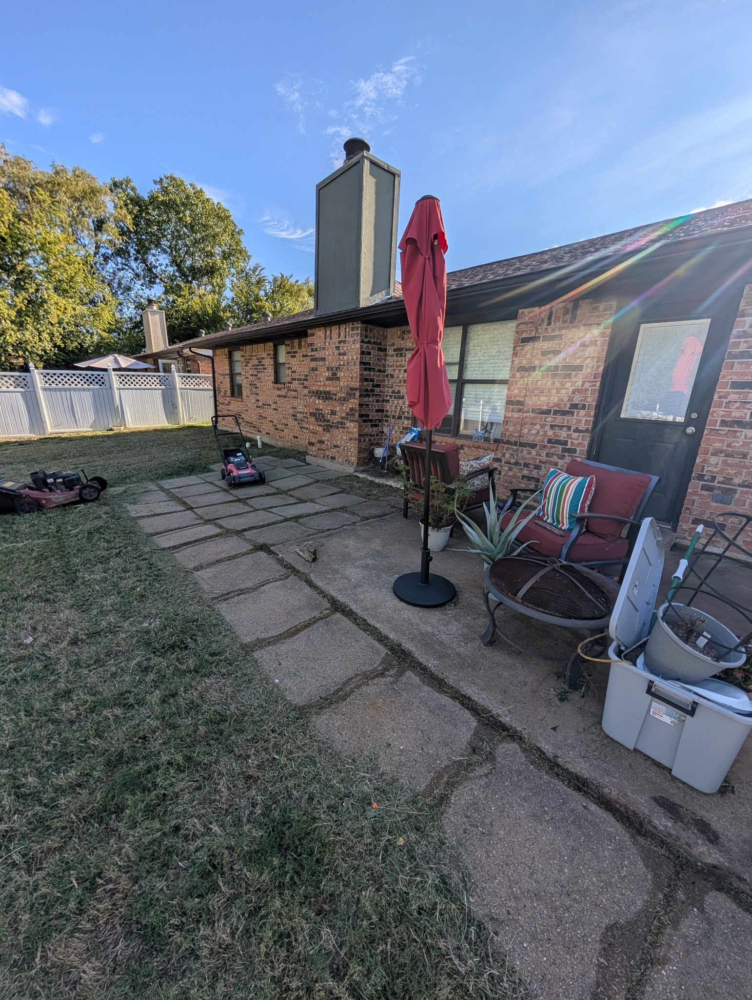
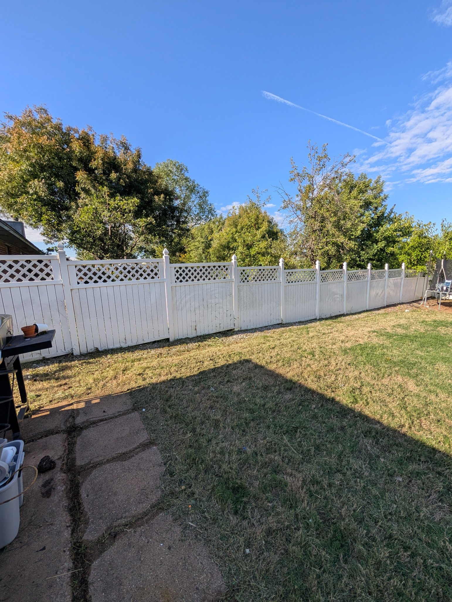
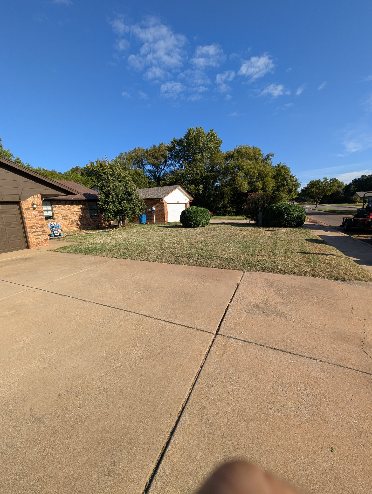
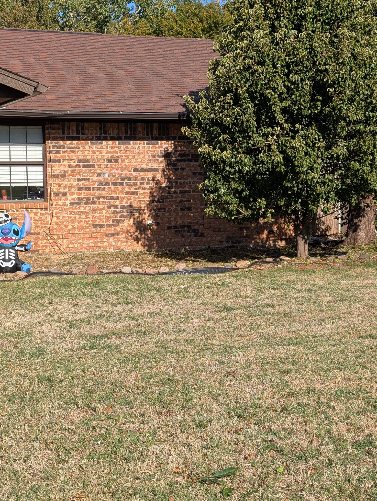
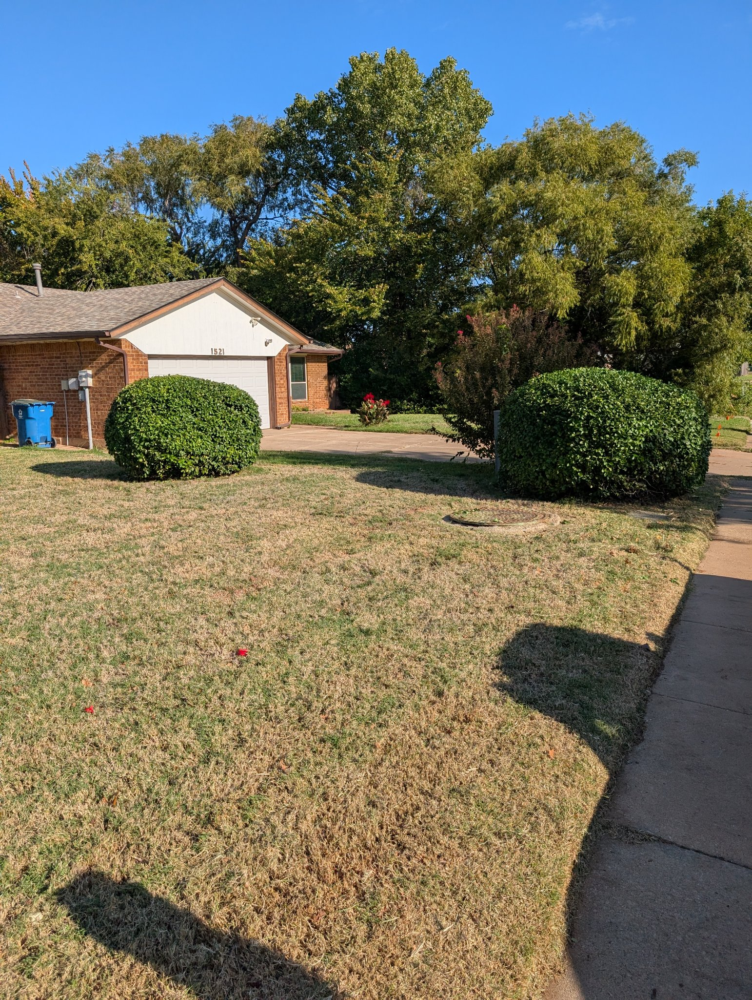
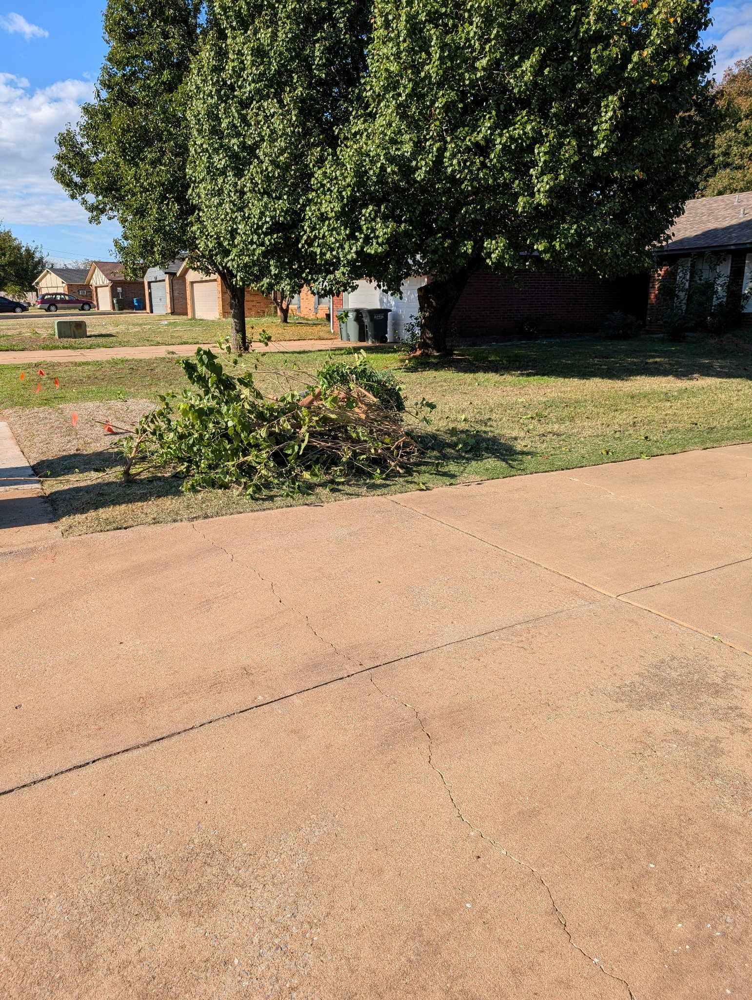

← Back to Donovan's instructions
Tuesday, Oct 27, 2026 · Crew: Justin + Jason · On site 8:29 AM – 10:32 AM
Mowing · front flowerbed weeds cleaned out · front two shrubs trimmed (aggressive, not scalped) · volunteer trees removed along the south back fence · limbs stacked neatly at the front curb.






